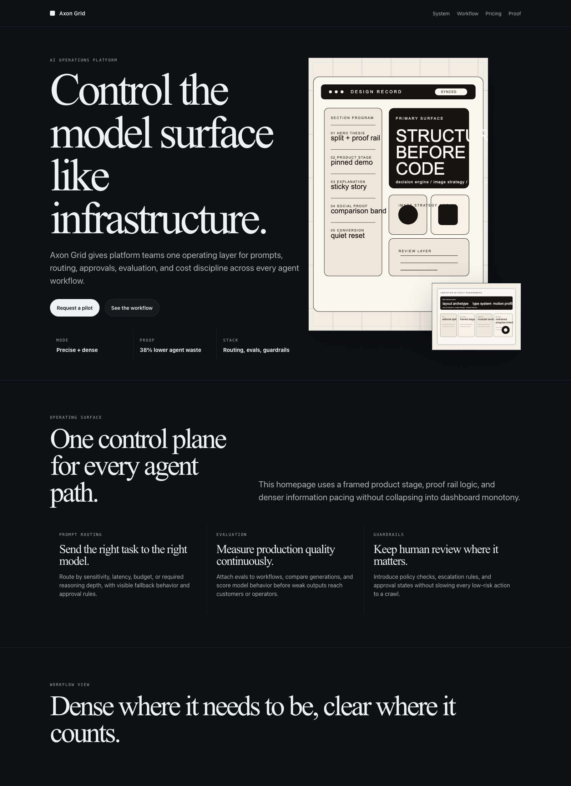
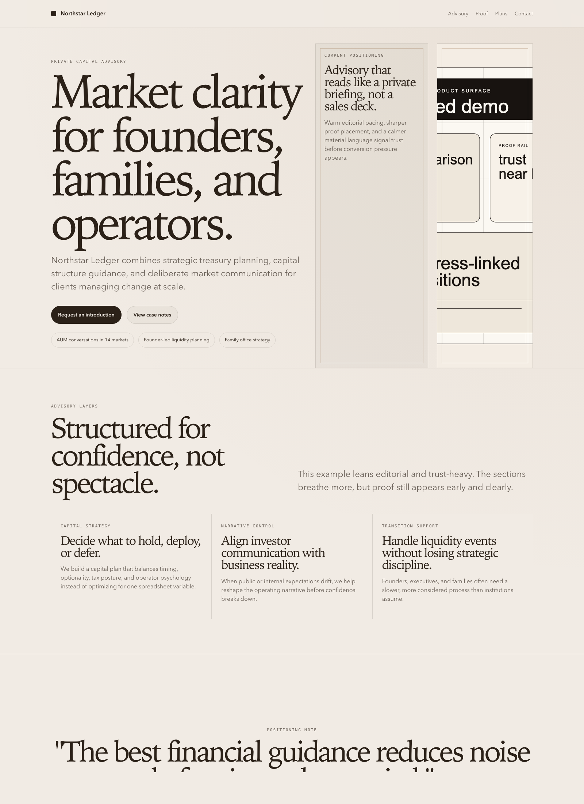
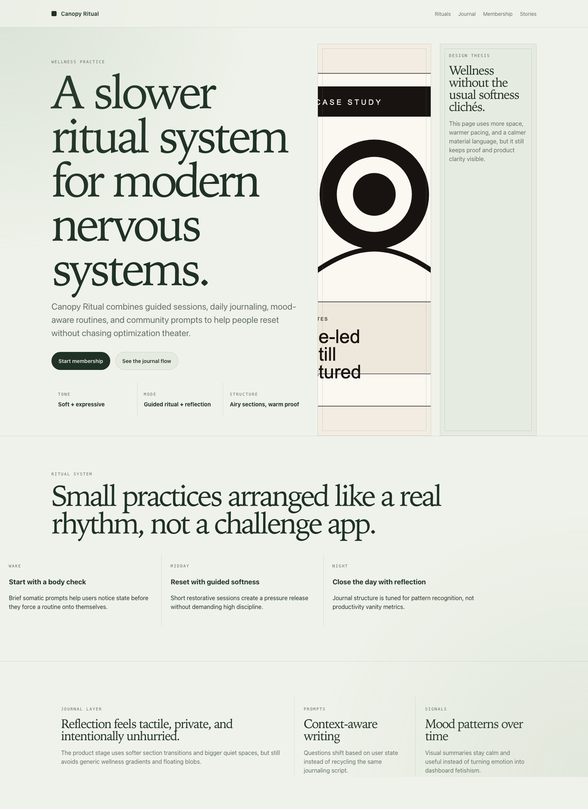

Developer tool
Axon Grid
A precise AI operations product site with a framed product stage, proof rails, and dense information design.
These are repo examples, not instructions. The actual skill logic lives only in `skills/design-skill/SKILL.md`.

A precise AI operations product site with a framed product stage, proof rails, and dense information design.

An editorial finance website balancing warmth, trust, market proof, and premium advisory positioning.

A more expressive consumer site with softer materiality, rich sections, and a lighter conversion rhythm.